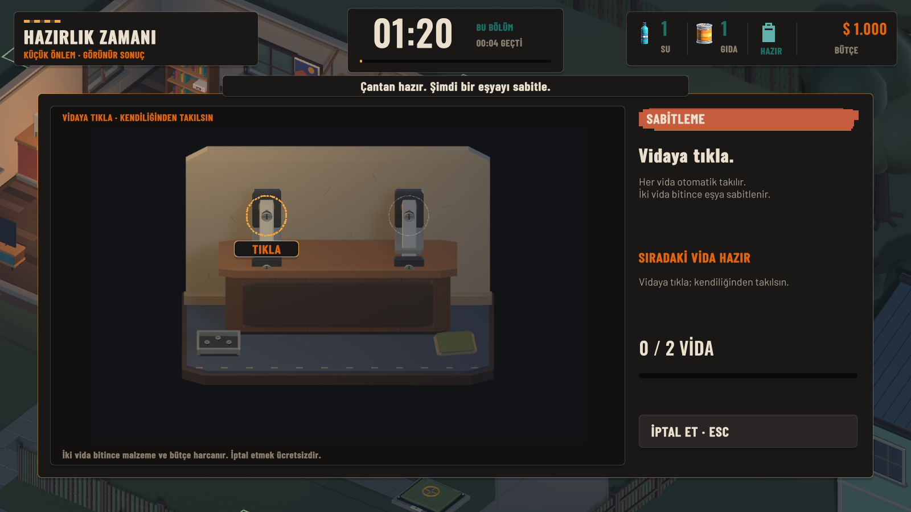
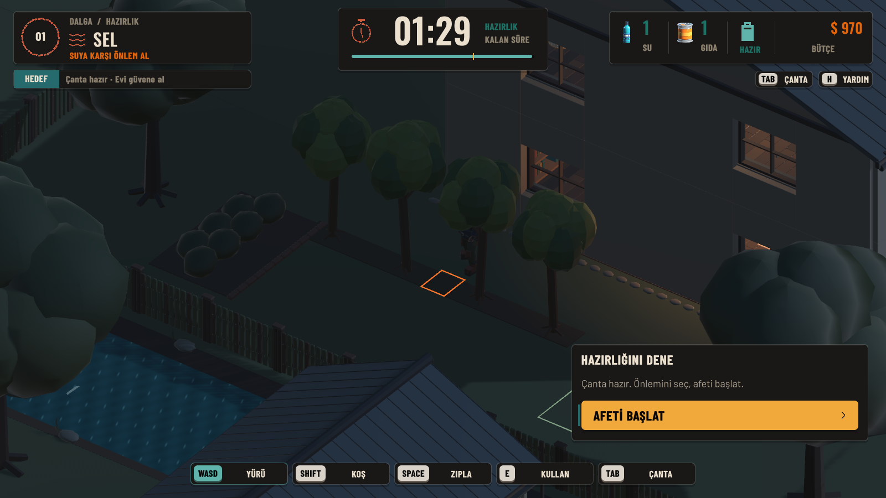
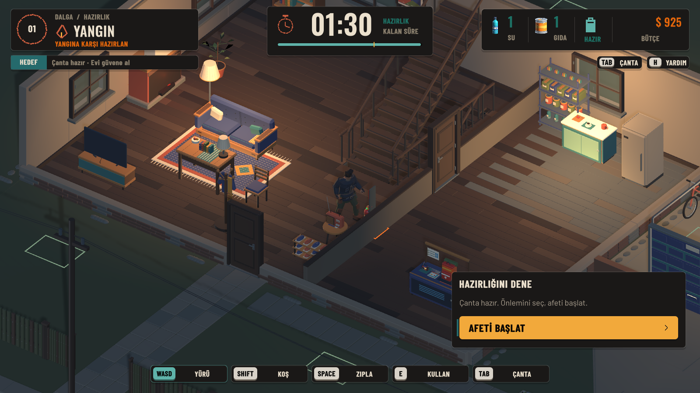
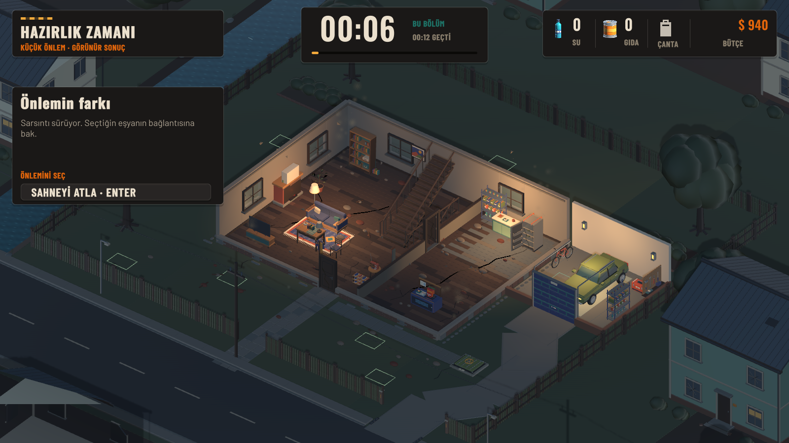
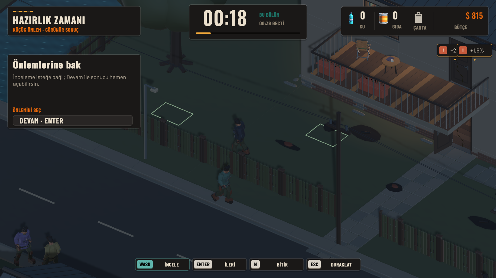
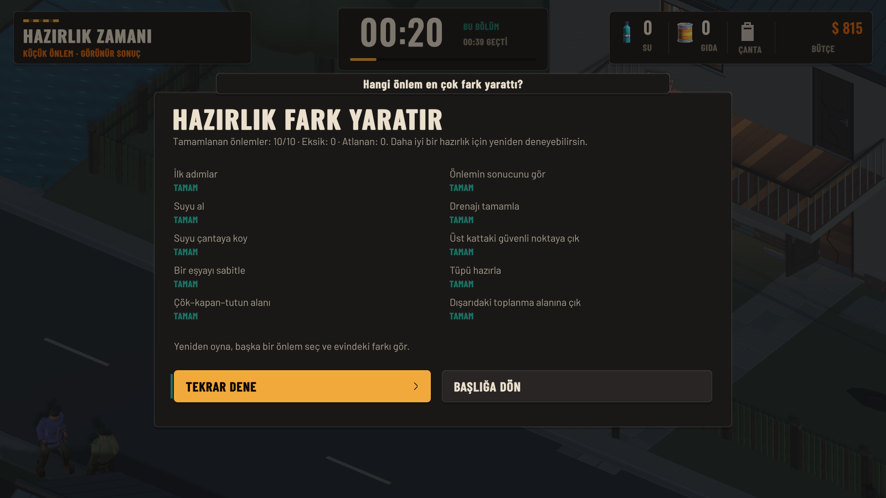
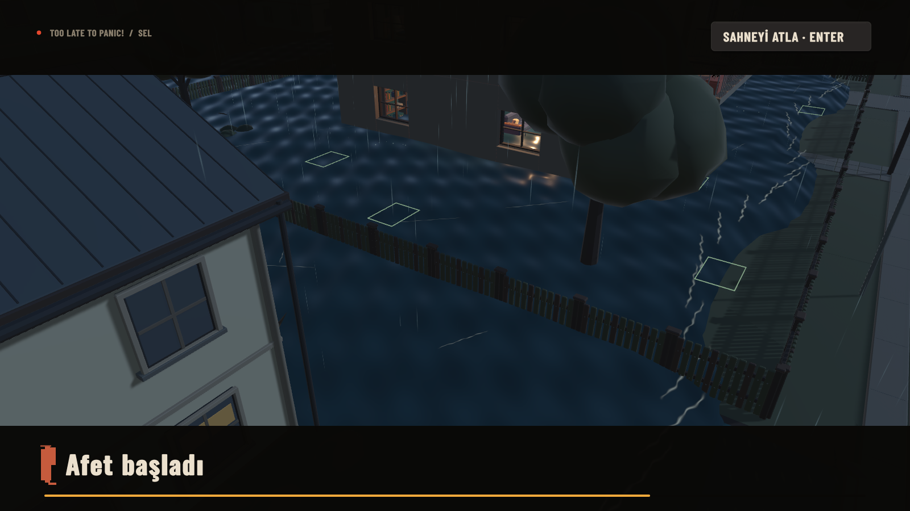
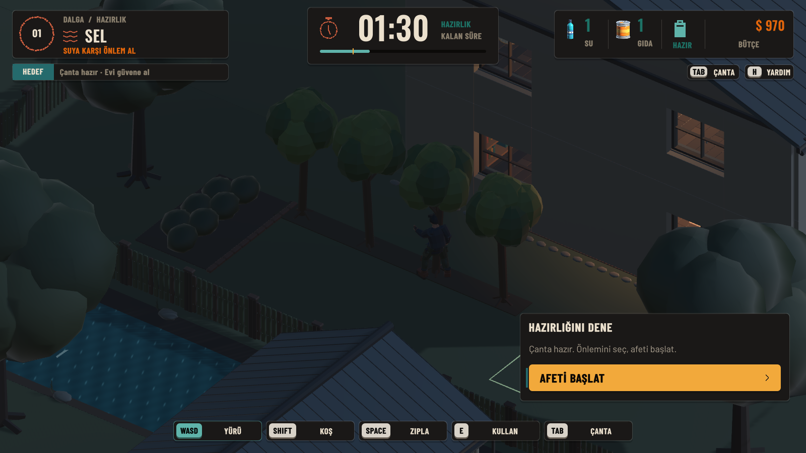
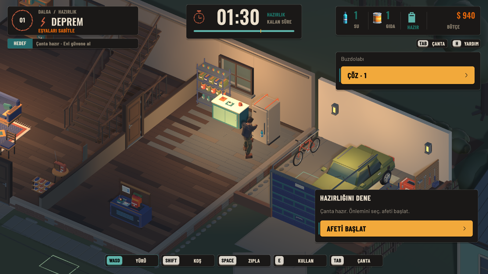

Vidaya tıklama

Tık halkası ve iki aşama okunur. Genel montaj yüzeyi seçili buzdolabının adını ve duvar/zemin yöntemini göstermiyor. Hedef bağlamı düzeltmesi hazırlanıyor.
E2E-002 · DLL 4761CB2672AA…Üretim V4.9 finalinden ve ayrı native baseline koşusundan özgün kareler. Fotoğraf yorumu, insanla ilk oynama kabulü değildir.

Tık halkası ve iki aşama okunur. Genel montaj yüzeyi seçili buzdolabının adını ve duvar/zemin yöntemini göstermiyor. Hedef bağlamı düzeltmesi hazırlanıyor.
E2E-002 · DLL 4761CB2672AA…
Birkaç olgun ağaç önlemi görünür. Karakterin başı/gövdesi kanopi altında kayboluyor; karanlık dış aydınlık bunu artırıyor. Bu kare tek başına sıkışma kanıtı değil.
E2E-003 · DLL 4761CB2672AA…
Gerçek kırmızı tüp doğru alt kat konumunda. İstasyonun küçük hazır işareti karakter/duvar arkasında kalıyor; kurulmuş önlemi yalnız metne dayanmadan ayırt etmek zor olabilir.
VISUAL_REVIEW_ONLY · DLL 4761CB2672AA…
Dolu ev ve sallanan eşyalar tema bağını destekliyor. Sol panelin Önlemini seç satırı hareket kilitli olay evresiyle çelişiyor. Geniş kadraj iki eşyanın farkını küçük bırakıyor.
UXA-003 · DLL 4761CB2672AA…
İnceleme/Devam metni anlaşılır. Sağ üstte iki hasar katkısı kartı çakışıyor; hangi nesnenin değeri olduğu okunamıyor. Yüzdeler önlenmiş hasar olarak yorumlanmamalı.
VIS49-001 / UXA-003 · DLL 4761CB2672AA…
Hiyerarşi ve Tekrar dene düğmesi güçlü. On maddede hareket/gözlem de var; Tamamlanan önlemler yerine Tamamlanan adımlar doğru. İnsan öğrenmesi/tekrar isteği ölçülmedi.
UXA-001 · DLL 4761CB2672AA…
Evin çevresindeki su ve yağmur seli ayırt ettiriyor. Büyük parlak desenler gözün odağını alıyor; hareketli görüntüyle A/B yapılmadan shader değişikliği kararı verilmedi. Bu, kısa akış sel anının yerine geçmez.
VIS49-004 / UXA-004 · DLL 4761CB2672AA…
Görüntü gerçek hata koşusundandır. Sayısal bağımsız kapsül sorgusu0.213m örtüşme ve sonraki controller hareketi0.244m itme kaydetti. Candidate-v2 retestte riskli kurulum maliyetsiz reddedildi; bu fotoğraf düzeltilmiş sonuç değildir.
E2E-005 · DLL 4DC8A8BC4A3A…
Candidate-v2: sağ kartta gerçek Buzdolabı adı ve ÇÖZ · 1 düğmesi görünüyor. Native rapor çözme, aynı iki vida ile ücretsiz yeniden sabitleme ve HUD üzerinden tekrar çözmeyi doğruladı. Oyuncunun hazırlık kararını geri alabilmesi artık görünür. Gerçek OS tık kabulü ayrı.
E2E-004 FIX RETEST · DLL 81868C12C12C…